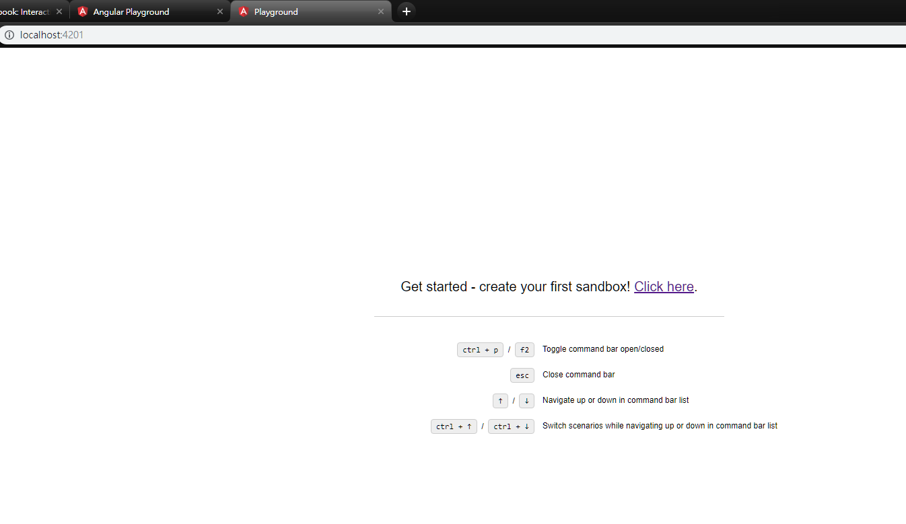

其實 Angular Playground 出來已經有好一段時間了，但是之前的環境設定會讓人懶得用。現在可以簡單的透過 ng add angular-playground 的方式完成整體的環境設定，這麼方便不用就說不過去了。
簡介
但什麼是 Angular Playground，如果你有聽過 React 的 Storybook ，那 Angular playground 也是要完成一樣的事情。簡單的說， Angular playground 提供一個乾淨的環境讓我們能就單一 Component 進行 UI 的測試。
有時候當 Angular 專案開發到很複雜時，某一個 Component 被藏在很多步驟後，但為了測試那個 Component 的畫面操作是否正常，就必須經過前面各種關卡的挑戰，那是否有更快更簡便的方式進行 Component UI 的測試呢? 其實 Angular playground 就可以做到這一點
安裝篇
透過 Angular CLI 的幫助，我們可以利用一行指令就將 Angular playground 的環境設定完成
1 | ng add angular-playground |
當執行這一行指令後，會產生及變更以下的檔案
-
angular-playground.json為 Angular playground 的設定檔案 -
src/main.playground.ts是 Angular playground 啟動時的進入檔，用來設定起使用的 NgModule -
更新
package.json，新增 script 指令，可以透過npm run playground的方式啟動 -
更新
angular.json，新增新的 playground 建置指令到projects區塊1
2
3
4
5
6
7
8
9
10
11
12
13
14
15
16
17
18
19
20
21
22
23
24
25
26
27
28
29
30
31
32
33
34
35
36
37
38
39
40
41
42
43
44
45
46
47
48
49
50
51"playground": {
"root": "",
"sourceRoot": "src",
"projectType": "application",
"architect": {
"build": {
"builder": "@angular-devkit/build-angular:browser",
"options": {
"outputPath": "dist/playground",
"index": "src/index.html",
"main": "src/main.playground.ts",
"polyfills": "src/polyfills.ts",
"tsConfig": "src/tsconfig.app.json",
"assets": [
"src/favicon.ico",
"src/assets"
],
"styles": [
"src/styles.css"
],
"scripts": []
},
"configurations": {
"production": {
"fileReplacements": [
{
"replace": "src/environments/environment.ts",
"with": "src/environments/environment.prod.ts"
}
],
"optimization": true,
"outputHashing": "all",
"sourceMap": false,
"extractCss": true,
"namedChunks": false,
"aot": false,
"extractLicenses": true,
"vendorChunk": false,
"buildOptimizer": false
}
}
},
"serve": {
"builder": "@angular-devkit/build-angular:dev-server",
"options": {
"browserTarget": "playground:build",
"port": 4201
}
}
}
}所以額外想加入的 assets / styles/ scripts 的部分，都可以設定在這個區塊內
當這些都建立完成後，就可以第一次 playground 的啟動 npm run playground ，執行指令後，將會做 Angular 專案的建置並啟動一個 web server，且將 port 開在 4201，所以可以打開瀏覽器並輸入 http://localhost:4201 就可以看到 playground 的頁面了

畫面上有寫了一些基本的操作指令
ctrl+p/F2開啟命令視窗esc取消命令視窗↑/↓進行上下選擇場景ctrl + ↑/ctrl + ↓切換場景
建立 sandbox
既然能使用 ng add 的指令，playground 當然也提供了 schematics 的指令來建立 sandbox 檔案
ng generate angular-playground:sandbox [path]/[component name]
輸入這行指令就會根據所指定的 component 建立相對應的 sandbox 檔案，什麼是 sandbox 檔案，這個檔案的性質跟 spec 測試檔案性質一樣，只差在這裡並不寫讓任何的測試程式碼，只有測試環境的設定而已
1 | import { sandboxOf } from 'angular-playground'; |
一個基本的 sandbox 檔案大致上是長這個樣子的，會包含這些元素
-
你測試的 Component 是哪一個，使用
sandboxOf(type: any, config?: SandboxOfConfig)的方式設定，這sandboxOf會回傳一個SandboxBuilder的 instance1
sandboxOf(HelloWorldComponent)
SandboxOfConfig: 用來設定與這 Component 相關的 Dependency，如同設定一個 NgModule，比較常用的會是 imports 與 providers- imports?: any[];
- declarations?: any[];
- entryComponents?: any[];
- providers?: any[];
- schemas?: any[];
- label?: string;
- declareComponent?: boolean;
-
SandboxBuilderClass 我們可以使用的方法只有一個，add(description: string, config: ScenarioConfig): SandboxBuilder;ScenarioConfig可以設定項目有，這裡設定是針對 Component 執行的環境場景- template: string;
- styles?: string[];
- context?: any; - 如果想要傳變數到 component 內，就可以在這個區塊作變數設定
- providers?: any[];
範例
我先建立一個 HelloWorldComponent ，並建立相對應的 sandbox 檔案
-
ng g c hello-world: 建立 HelloWorldComponent -
ng g angular-playground:sandbox hello-world: 為 HelloWorld 建立 sandbox 檔案 -
執行
npm run playground1
2
3
4
5
6
7
8
9
10
11
12
13
14
15
16
17import { sandboxOf } from 'angular-playground';
import { HelloWorldComponent } from './hello-world.component';
export default sandboxOf(HelloWorldComponent)
.add('default', {
template: `<app-hello-world></app-hello-world>`
})
.add('with input', {
template: `<app-hello-world [data]="data"></app-hello-world>`,
context: {
data: {
firstName: 'Kevin',
lastName: 'Yang'
}
}
});當設定兩組場景時，命令視窗的選擇就可以看到這兩個場景，之後就可以透過
↑/↓來選擇進階使用小技巧
Component 的開發當然不可能這麼單純，如果有注入 Api Service 時，總不可能每次都去打真的 API，這時候就可以透過 provide DI 設定的技巧，有很多手法跟寫 spec 測試時是一樣的，簡單範例程式碼如下
1
2
3
4
5export default sandboxOf(MyComponent, {
providers: [
{ provide: myService, useValue: { doStuff: () => {} } }
]
})相關資源